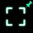

Sticky Fullscreen
Show Fullscreen Button
Toggle whether the small "Enter Fullscreen" button is shown on allowed sites. The button automatically hides after 10 seconds.
Only After Redirect/Navigation
When enabled, the extension will not trigger fullscreen on the initial page load — it will only perform fullscreen after a subsequent navigation or redirect.
Hide Mouse Cursor
When enabled, the mouse cursor will automatically hide after 10 seconds of inactivity on allowed sites.
Allowed Domains
Enter the domains where you want to force fullscreen. One per line.